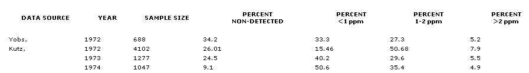

PART 2 Ron Nehrig
The idea of putting digested sewage sludge on crop and pasture land-in place of synthetic fertilizers-seems to be a natural. After all, what better way to [1] build rich topsoil and [2] help solve the country's solid waste disposal problem . . . than to use plain ole sewage sludge as fertilizer?
"What better way indeed, " said Ron Nehrig a year ago when he and his wife, Sara, decided to apply sludge to their five-acre Bloomington, Indiana farmstead. "I'd spent a fair amount of time researching the idea and could find nothing wrong with it, " explains Ron, "but to put my mind at ease I called the city engineer in charge of the local treatment facility and asked him about the presence of heavy metals-and other pollutants-in the digested sludge. The man assured me the wastes were entirely safe to use. "
Tragically, the city engineer was wrong. As Ron and Sara later learned-after they'd spread 100 tons of sewage solids on their land-the city's wastes were contaminated with polychlorinated biphenyls (PCB's) . . . an exceedingly toxic and persistent class of industrial chemicals that-in this case-had been put in the sewage by a nearby Westinghouse factory.
In MOTHER NO. 41, Ron Nehrig told us how he learned of the presence of PCB's in Bloomington's sludge, and how he came to accept the fact that his farmland had been ruined for food production for, possibly, as long as the next 100 years. Below, Ron discusses the progress that he and other Bloomington residents have made toward bringing an end to PCB pollution in southern Indiana.
We'd followed the almost-daily reports in the Bloomington newspaper about PCB's in the city's sludge for several weeks, but the full impact of what the polychlorinated biphenyls were doing to our lives didn't really hit my wife and me until April 19, 1976. That was when the State Board of Health called to tell us that the milk from our cow, Blossom (who'd been grazing on the sludge-treated land), contained 5.0 parts per million (ppm) of the toxic chemicals . . . twice the limit established for milk by the Food and Drug Administration.
Although we thought we knew the answer, we asked the Board of Health man if this meant we had to stop drinking the cow's milk. Strangely, he wouldn't give us a definite "yes" or "no". All he would do is tell us the test result.
Three days later we talked to Karl Bremer-head of the Environmental Protection Agency's Surveillance and Analysis Division in Chicago-over the phone, and he was less equivocal. "Don't drink that milk," he warned us. "In fact, don't grow food on the land, don't walk on the contaminated soil, and don't come in contact with the raw sludge." These words frightened us . . . enough to make us want to do something about the PCB pollution problem.
So in late April, Sara and I-along with members of the Sierra Club and the League of Women Voters-helped form a group called Citizens Concerned About PCB's (CCAP). And working together, the 70 or so members of CCAP set out to accomplish the following goals:
[1] DISSEMINATE INFORMATION ON PCB'S. We made up "fact sheets" to give free to persons who'd used sludge on their gardens, had livestock drinking from contaminated streams, or were simply interested in what was going on in the community. (The sheets listed a phone number that people could dial to obtain further information and advice.) In addition, the CCAP made article reprints, and other material on the subject, available in the county library to anyone who wanted to read them.
[2] HOLD MEETINGS AND PANEL DISCUSSIONS. The CCAP invited representatives from many governmental agencies to speak and answer questions at meetings held by the group. Attendance often ran high at these gatherings . . . high enough to merit media coverage, which was helpful for increasing the public's awareness of the situation. (After reading about this activity in the local paper, people who were only vaguely aware of the PCB problem before would begin to sit up and take notice.) So: CCAP meetings served not only as open forums for discussion, but as focal points for newspaper and TV coverage.
[3] ASSURE REPRESENTATION AT STATE AND LOCAL HEARINGS. The CCAP members publicized the time and place of every scheduled public hearing on the PCB/Westinghouse issue so that concerned individuals would have a chance to attend. (One time, a group of CCAP members drove 50 miles to be present at an Environmental Management Board meeting in Indianapolis.)
[4] PUBLICIZE THE PCB POLLUTION PROBLEM. Thanks partly to CCAP's efforts, the PCB problem received a great deal of coverage in the Bloomington Herald-Telephone, the Indiana University student paper, and a Louisville, Kentucky newspaper. (Our personal story has also been reported on by at least four local television stations.) Throughout April and May of 1976, in particular, CCAP members carried on a vigorous letter-writing campaign aimed at informing public officials (and editors) of the seriousness of the PCB problem.
Although it was not one of the group's stated goals, I feel I should point out that CCAP members did provide us with moral support that-at the time-we desperately needed. Without this support (and the backing of our friends, who helped us pay our often-astronomical phone bills), I'm not sure how we would've made it through those first bleak months.
There's no question that the many newspaper stories, the TV exposure, CCAP meetings, and letters to the editor spawned by our situation have helped start the bureaucratic ball rolling toward the search for a solution to the PCB problem. The meaningful progress that's been made, however, is-if not negligible-at least questionable.
The State Board of Health, for instance (a body that most people naively believe is dedicated to protecting the population from health hazards), has done little or nothing to safeguard Bloomington's residents from PCB exposure. One SBH official-when questioned about further PCB testing in the Bloomington area-stated, "What Bloomington area residents feel is necessary is not what we deem to be necessary .... I think that we have our finger on the known problems right now." (He went on to say: "If we increase sampling, we may find we have more of a problem than we think.")
The State Board of Health does test Indiana milk for PCB's, and they've known since 1972 that dairy products in various parts of the state are contaminated with PCB's. (The contamination has been traced to silage stored in silos treated with a sealer containing PCB's.) Still, the SBH has done very little to prevent this contamination at its source . . . although they have quarantined (and, in at least one case, shut down) dairy farms.
Earlier this year, the Indiana State Legislature passed a bill restricting the use of PCB's in the state, but it's not worth the pulp it's printed on. Under this statute-which went into effect as an "emergency" measure on May 1, 1976-the legal upper limit for PCB's in any product made in the state is now an incredible 250,000 parts per million! The acceptable content decreases over time until-in 1979-PCB's cannot exceed a concentration of 100 ppm in any product . . . unless the industry manufacturing that product has a permit (granted by the state) to allow them to use PCB's in such amounts. In other words, the Westinghouse Electric Corporation-as long as they have the appropriate permit-will be allowed to go on using PCB's forever.
On a local level, the city of Bloomington has had-for some time-an ordinance that says something like: "No substance may be put in the city sewer if that substance interferes with the normal disposition of the city's solid wastes." Last spring, the Utilities Service Board decided that Westinghouse-by discharging PCB's into the sewer-was violating this ordinance. As a result, the Board scheduled a public hearing for June 30, 1976, to decide whether and how Westinghouse should be made to come into compliance with the rule.
Two days before the hearing-on June 28-the Westinghouse plant manager called the factory's 400 employees out onto the lawn for a special announcement. He told the workers that the Utilities Service Board had scheduled a meeting for June 30 . . . at which the Board would decide on a rule that might cause Westinghouse to have to lay off its employees.
Come the night of June 30, hordes of angry Westinghouse employees packed the USB meeting hall. And, for a time, the scene was an emotion-ridden one. An ugly one. Once things had simmered down a little, however, representatives of both sides of the PCB issue were given a chance to air their views, and the meeting proceeded peaceably. (The entire session, incidentally, was televised by a local TV station.)
In the end, the Board decided to give Westinghouse until December 1, 1976, to reduce their PCB discharge to a level set by the EPA. The EPA, however, has yet to recommend an appropriate discharge level.
A significant development occurred on April 28, 1976, when Barry Brown (the Monroe County Prosecutor) and Raymond Schneider (environmental specialist with the Monroe County Health Department) sent letters to the Indiana attorney general, the State Board of Health, and the Department of Natural Resources, stating that legal action might be taken against these offices if something were not done about PCB pollution in Bloomington within 180 days.
The response: the State Environmental Management Board scheduled a hearing for August 18, at which time expert witnesses from around the country were to be brought to Indiana to help health and environment officials decide what the implications of PCB pollution in Bloomington might be.
Incredibly, on August 10-for no apparent reason-the state attorney general's office ordered the cancellation of the August 18 hearing. As you might expect, Bloomington residents were outraged and letters to the editor printed in the local paper reflected this feeling. So great was the uproar regarding this incident that the Indiana Attorney General, Theodore L. Sendak, on August 26 announced that he was ordering the Environmental Management Board to reschedule a hearing date (a date that-as of this writing-has not yet been announced). Sendak's own explanation of what happened is that one of his deputies "made the decision to ask for the postponement because he felt it would expedite the matter".
Meanwhile-as city, state, and federal authorities sit on their thumbs-Westinghouse continues to discharge PCB's into the city sewer lines, and Bloomington's waste treatment plant continues to produce about 17 tons of processed sludge per month. Progress toward a solution to the pollution problem has been terribly slow . . . despite the fact that the longer we wait to deal with this problem, the more difficult the solution will be.
What people don't realize is that even if Westinghouse were to stop discharging PCB's tomorrow morning, contaminated sludge would still be coming out of the sewage plant's large holding tanks (where anaerobic digestion occurs) for a long time . . . three to five years, according to city chemist Rick Peoples.
Nor will it be easy-over the coming years-to dispose of the PCB-contaminated sludge. At the moment, the only safe way to get rid of such wastes is to put them into a "scientifically controlled landfill" . . . that is, a landfill that [A] is built over heavy, clay soil, [B] is lined with a waterproof liner, and [C] has collection wells around its perimeter, where runoff water can be collected and then trucked to a facility equipped to incinerate the wastes at temperatures high enough to destroy PCB's (2,000° to 2,700° F).
The city, naturally, is wondering who'll pay for all this. Monroe County technically has the responsibility for the old landfills that contain PCB-contaminated sludge and other wastes. The County Council, however, has refused to appropriate the funds necessary for the proper disposal of PCBtainted wastes until it has an assurance that Westinghouse will pick up the tab. A tab that-according to Rick Peoples-is expected to run about $50,000 a year . . . and which Westinghouse doesn't seem to want to pay (voluntarily, at least).
This brings us to the heart of the industrial pollution issue, not only in Bloomington but everywhere: money. For the cold, hard truth is that it costs more money-a lot more, in many cases-to dispose of poisonous chemicals in a safe and rational manner than to dump them into the sewer (or the closest stream or landfill). While the corporate giants save money by such dumping, though, the people of this country lose it in more ways than you can count.
Bloomington's residents, for instance, have had their standard of living lowered as a result of Westinghouse's waste-disposal practices. It's been lowered because of water that cannot safely be drunk by humans or animals (or used on gardens), sludge that cannot be put back on the land, land that-in some cases-cannot be used to produce food, cows that cannot be milked or eaten, and fish that cannot be caught for dinner. (The Board of Health has posted signs at nearby streams, warning people against eating any fish caught there.) And that's just the facts of the situation we face today . . . a situation that-if left unchanged-is sure to be worse 10, 15, or 20 years from now.
No, it's not a pretty picture. And it doesn't say much for the way our government agencies operate. But-at this stage of the game-that's the way things are.
When I realize that all of this could have been averted by a serious warning to Bloomington's residents not to use the city's sludge-or by a system at the Westinghouse plant that would have eliminated PCB's at their source-I can only stop and wonder why this whole nightmare had to happen in the first place . . . and who should bear the costs. Should Sara and I, as individuals, graciously accept our losses? Should the community be responsible? Or should the industry that brought PCB's into the community assume our losses, as they have accepted the profits which-at least indirectly-those losses have made possible?
We think the answer to the last question is yes . . . which is why we've filed a class action suit-with 12 other Bloomington residents-against both the Monsanto Company and Westinghouse Electric Corporation for the hardships they've caused us.
We don't know if we can win the suit-after all, we don't have the resources (legal or otherwise) of a Monsanto or a Westinghouse-but that's not really the point. The point is, someone has to fight the battle. Thus time, it's us. Next time, it might be you.
EDITORS NOTE: This has been the second installment of a twopart feature. For more information on PCB's-who uses them, their hiological effects, and the extent of their distribution in the environment-see Part I of Ron Nehrig's story, which appeared on pages 22-25 of MOTHER NO. 41.
Taken from the proceedings of the National Conference on Polychlorinated Biphenyls (November 19-21, 1975, Chicago, Illinois) and from "Review of PCB Levels in the Environment", January 1976 . . . both published by the Office of Toxic Substances, Environmental Protection Agency, Washington, D.C. 20460.
[1] Find out if the city supplying that sludge has performed any tests to detect PCB's, heavy metals (cadmium, zinc, etc.), and/or pesticide residues in its processed wastes. Don't listen to oral assurances. Get the test results in writing.
[2] Attempt to identify the wastes that are being dumped into the city sewer by local industries. Is there a capacitor manufacturer that uses PCB's in town? (See the table on page 24, MOTHER NO. 41.) Is there a nearby paperrecycling plant that may be discharging PCB-contaminated ink residues? (Until recently, printer's inks were just one of the many products that contained PCB's.) Ask around. See what you can find out.
[3] If in doubt, try to have sludge samples tested for PCB's and other contaminants by the city laboratory (if one exists where you live), a nearby university, or the State Board of Health. Or pay a private lab to make the necessary tests. One such facility is operated by the WARF Institute, P.O. Box 2599, Madison, Wis. 53701. (They'll perform PCB tests at a cost of approximately $40 per sample.)
Sludge is inexpensive, plentiful, and rich in plant nutrients, but can-if it's contaminated with industrial chemicals-pose a threat to human (and animal) health when used as fertilizer. So find out what lurks in your city's sludge before you "pile it on thick".
|
|
 |
|